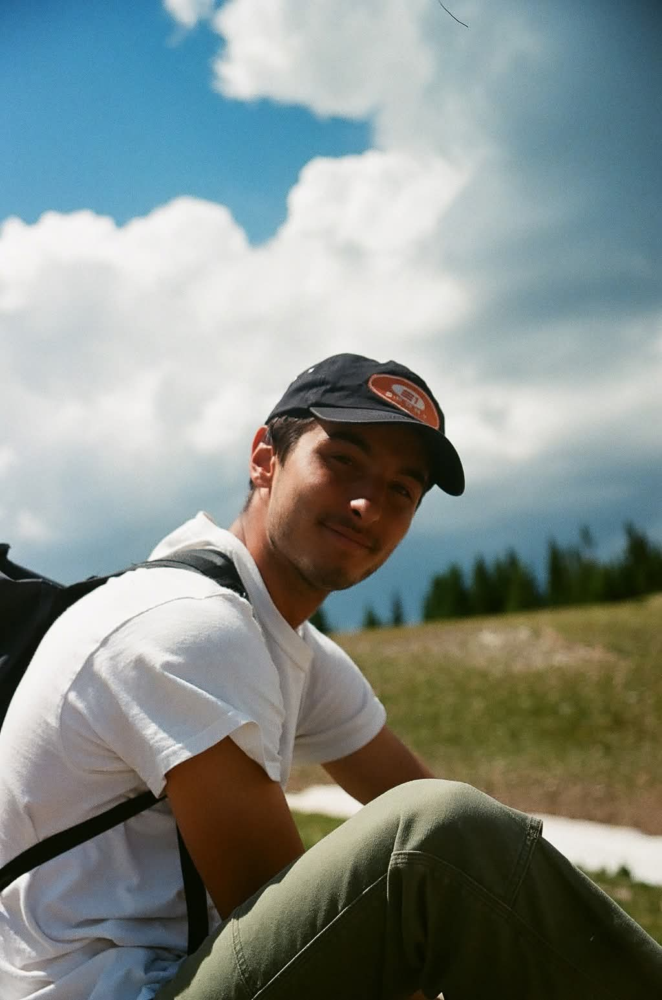
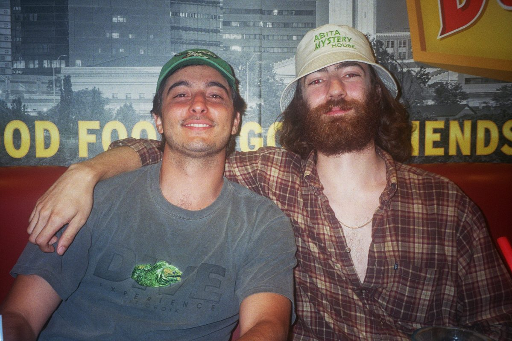
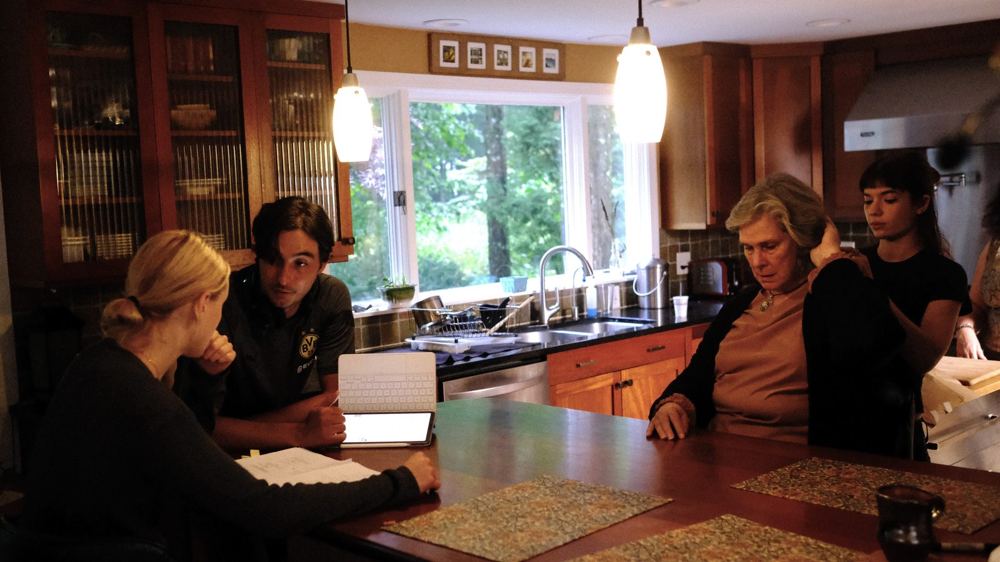

About
Adi Jahić
I am a Bosnian-American, micro-budget independent filmmaker based in Providence and Los Angeles. My most recent film, Things We Like, has played in festivals and theatres in the U.S. and abroad and has been featured in several “Best of 2023” lists.
As put by film writer Brett Wright, I “focus on the small details: tuning in to the tics and the hesitations, and what lurks beneath the characters’ stammers and ‘neverminds,’” and my work “shows an ambition to explore messy emotions while refusing to define its characters in any narrow fashion and accepts them, foibles and all.” My films have been described as “authentic”, “sensitive”, “emotionally complex”, and “endlessly surprising” by filmmakers and critics in the independent film sphere.
My next feature, Yesterday, Nothing In My Life Changed, is on the way.
Contact
For festival programming, press, distribution or booking enquiries:
- Emailadi dot j dot jahic at gmail dot com
- Letterboxdgodspeed_aj
- Vimeovimeo.com/adijahic
Outside of film, I am a PhD student in economics — academic site.